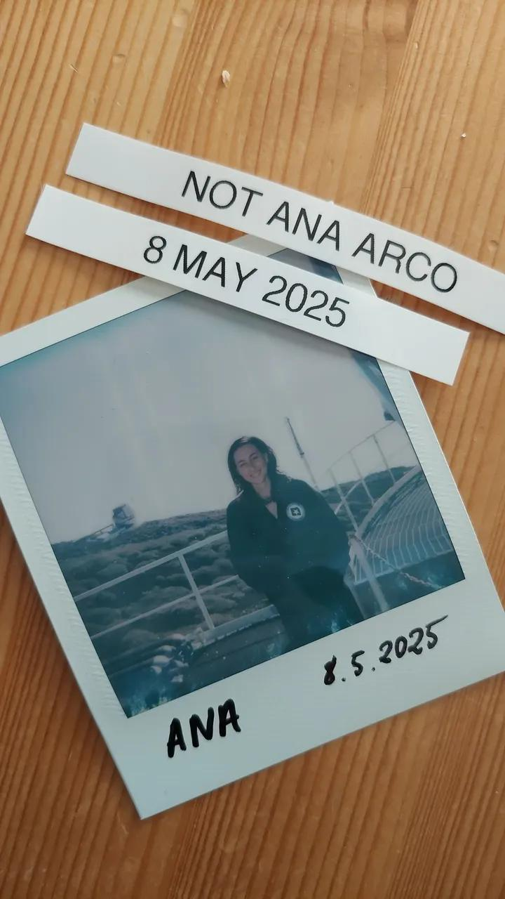
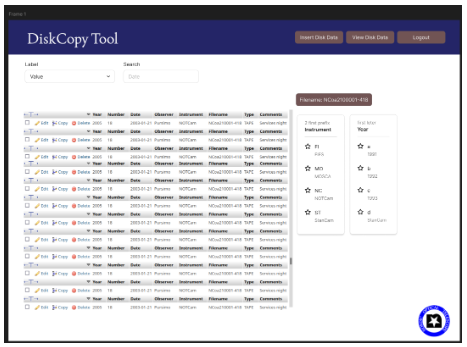
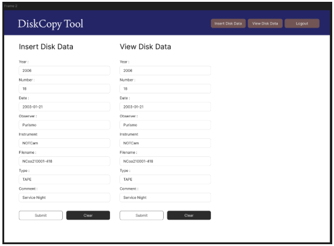

Nací en Fuente Vaqueros, la cuna granadina de Federico García Lorca. Allí, a los
diez años, inicié mi viaje en el lenguaje musical y el clarinete en el Centro Lorquino, integrándome
más tarde en la Banda Municipal La Vega de Granada.
Para compaginar el bachillerato de artes con las exigencias del conservatorio, me trasladé a la
capital, donde culminé el Grado Profesional de Clarinete.
El Descubrimiento del Archivo
Mi paso por la universidad para cursar Historia y Ciencias de la Música despertó en
mí una fascinación absoluta por las estructuras de preservación. Fue en Madrid, gracias a la
Universidad Autónoma, donde descubrí el potencial de las Humanidades Digitales,
consolidando la necesidad de proteger la memoria cultural a través de la tecnología.
Cronología Académica
Centro de Estudios
Titulación / Especialidad
Periodo
IES José María Pérez Pulido (La Palma)
Exploración en Desarrollo de Aplicaciones Web
2024 - 2027
Escuela Oficial de Idiomas (EOI) de Granada
Certificación de Idioma Inglés B1
2021 - 2022
Universidad Autónoma de Madrid
Historia y Ciencias de la Música y Tecnología Musical
2020 - 2021
Universidad de Granada
Grado en Historia y Ciencias de la Música
2016 - 2021
Conservatorio "Ángel Barrios" (Granada)
Grado Profesional en la Especialidad de Clarinete
2013 - 2021
Escuela de Arte de Granada
Bachillerato en la Modalidad de Artes
2013 - 2015
IES Fernando de los Ríos
ESO (Fuente Vaqueros)
2009 - 2013
Preservación en el Nordic Optical
Telescope
Observatorio del Roque de los Muchachos, La Palma
Durante mis prácticas aplicadas, me integré en el equipo técnico del telescopio con un desafío
puramente documental: diseñar un sistema capaz de catalogar y gestionar un volumen masivo de planos
y especificaciones técnicas de la infraestructura, asegurando la transición de soportes
tradicionales hacia un entorno digital indexado y accesible.

El Roque de Los
Muchachos, mayo de 2025.La herencia física que
requiere estructuras de orden digital.
Esta experiencia consolidó mi visión: la arquitectura de la información y las bases de datos no son
entes fríos, sino el soporte indispensable para que el conocimiento científico y cultural resista el
paso del tiempo.


Prototipos de la interfaz del archivo
digital diseñado.